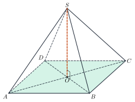
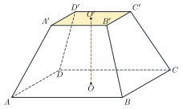

VolumesThể tích khối chóp, khối lăng trụ
Grade 11 · Topic: Perpendicularity in SpaceLớp 11 · Chủ đề: Quan hệ vuông góc trong không gian
1Lesson IntroductionGiới thiệu bài học
Learning goalsMục tiêu bài học
By the end of this lesson you can:
Sau bài học này, em có thể:
recall the volume formulas of pyramids, frustums, prisms, boxes and cubes;
nhớ công thức thể tích khối chóp, thể tích khối chóp cụt đều, thể tích khối lăng trụ, khối hộp chữ nhật, khối lập phương;
find the height and the base area needed in a given solid;
xác định chiều cao và diện tích đáy cần thiết của khối đã cho;
compare volumes by ratios;
so sánh thể tích bằng tỉ số;
compute capacities of tanks, buckets and famous buildings.
tính sức chứa của bể, xô và thể tích các công trình nổi tiếng.
2Mathematical VocabularyTừ vựng Toán học
volume of a pyramid – \(V=\frac13Bh\), \(B\) the base area, \(h\) the height.
thể tích khối chóp – \(V=\frac13Bh\), \(B\) là diện tích đáy, \(h\) là chiều cao.
volume of a prism – \(V=Bh\).
thể tích khối lăng trụ – \(V=Bh\).
volume of a frustum – \(V=\frac h3\left(S+S'+\sqrt{SS'}\right)\), \(S\), \(S'\) the areas of the two bases.
thể tích khối chóp cụt đều – \(V=\frac h3\left(S+S'+\sqrt{SS'}\right)\), \(S\), \(S'\) là diện tích hai đáy.
3Useful English PhrasesCụm từ tiếng Anh thường gặp
The volume equals one third of the base area times the height.
Thể tích bằng một phần ba diện tích đáy nhân chiều cao.
The height is the edge perpendicular to the base.
Chiều cao là cạnh vuông góc với đáy.
One cubic decimetre is one litre.
Một đề-xi-mét khối bằng một lít.
The ratio of the volumes is one sixth.
Tỉ số thể tích bằng một phần sáu.
Compute the area of the base first.
Tính diện tích đáy trước.
4Prerequisite ReviewÔn tập kiến thức nền
From Bài 23–26: heights are perpendicular segments; regular pyramids project onto the centre. Areas: square \(a^2\), right triangle \(\frac12pq\), equilateral triangle \(\frac{a^2\sqrt3}4\).
Từ Bài 23–26: chiều cao là đoạn vuông góc; hình chóp đều có đỉnh chiếu xuống tâm đáy. Diện tích: hình vuông \(a^2\), tam giác vuông \(\frac12pq\), tam giác đều \(\frac{a^2\sqrt3}4\).
5TheoryLý thuyết
5.1 Pyramids and frustumsKhối chóp và khối chóp cụt đều
FormulasCông thức
Pyramid: \(V=\dfrac13Bh\) (\(h\) = distance from the apex to the base plane).
Khối chóp: \(V=\dfrac13Bh\) (\(h\) là khoảng cách từ đỉnh đến mặt phẳng đáy).
Regular frustum with base areas \(S\), \(S'\) and height \(h\): \(V=\dfrac h3\left(S+S'+\sqrt{SS'}\right)\) (the big pyramid minus the small one).
Khối chóp cụt đều có diện tích hai đáy \(S\), \(S'\), chiều cao \(h\): \(V=\dfrac h3\left(S+S'+\sqrt{SS'}\right)\) (khối chóp lớn trừ khối chóp nhỏ).

5.2 Prisms, boxes, cubesKhối lăng trụ, khối hộp, khối lập phương
FormulasCông thức
Prism: \(V=Bh\) (for a right prism \(h\) is the lateral edge).
Khối lăng trụ: \(V=Bh\) (với lăng trụ đứng, \(h\) là cạnh bên).
Box: \(V=abc\); cube: \(V=a^3\).
Khối hộp chữ nhật: \(V=abc\); khối lập phương: \(V=a^3\).
Ratio rule: for \(M\in SA\), \(N\in SB\), \(P\in SC\): \(\dfrac{V_{S.MNP}}{V_{S.ABC}}=\dfrac{SM}{SA}\cdot\dfrac{SN}{SB}\cdot\dfrac{SP}{SC}\).
Tỉ số thể tích: với \(M\in SA\), \(N\in SB\), \(P\in SC\): \(\dfrac{V_{S.MNP}}{V_{S.ABC}}=\dfrac{SM}{SA}\cdot\dfrac{SN}{SB}\cdot\dfrac{SP}{SC}\).

Watch out!Lưu ý
Do not forget the factor \(\frac13\) for pyramids, and use the height, not a lateral edge (except for right prisms).
Đừng quên hệ số \(\frac13\) của khối chóp, và dùng chiều cao, không dùng cạnh bên (trừ lăng trụ đứng).
6Worked ExamplesVí dụ có lời giải
ExampleVí dụ 1BasicCơ bản – A regular pyramidKhối chóp đều
A regular pyramid \(S.ABCD\) has base side 6 and height 4. Find its volume and its lateral edge.
Khối chóp tứ giác đều \(S.ABCD\) có cạnh đáy 6, chiều cao 4. Tính thể tích và độ dài cạnh bên.
Analysis: \(B=36\), \(h=4\); \(AO=3\sqrt2\).
Phân tích: \(B=36\), \(h=4\); \(AO=3\sqrt2\).
\(V=\frac13\cdot36\cdot4=48\).
\(V=\frac13\cdot36\cdot4=48\).
\(SA=\sqrt{SO^2+AO^2}=\sqrt{16+18}=\sqrt{34}\).
\(SA=\sqrt{SO^2+AO^2}=\sqrt{16+18}=\sqrt{34}\).
\(V=48\), \(SA=\sqrt{34}\).
\(V=48\), \(SA=\sqrt{34}\).
ExampleVí dụ 2BasicCơ bản – A right prismKhối lăng trụ đứng
A right prism has a right-triangle base with legs 3 and 4 and lateral edge 10. Find its volume.
Khối lăng trụ đứng có đáy là tam giác vuông với hai cạnh góc vuông 3 và 4, cạnh bên 10. Tính thể tích.
Analysis: \(V=Bh\), \(h\) = lateral edge.
Phân tích: \(V=Bh\), \(h\) là cạnh bên.
\(B=\frac12\cdot3\cdot4=6\); \(V=6\cdot10\).
\(B=\frac12\cdot3\cdot4=6\); \(V=6\cdot10\).
60.
60.
ExampleVí dụ 3IntermediateTrung bình – Height from an angleChiều cao qua góc
\(S.ABCD\): square base of side \(a\), \(SA\perp(ABCD)\), \(SC\) makes \(45^\circ\) with the base. Find the volume.
Hình chóp \(S.ABCD\) có đáy là hình vuông cạnh \(a\), \(SA\perp(ABCD)\), \(SC\) tạo với đáy góc \(45^\circ\). Tính thể tích khối chóp.
Analysis: \((SC,(ABCD))=\widehat{SCA}=45^\circ\).
Phân tích: \((SC,(ABCD))=\widehat{SCA}=45^\circ\).
Triangle \(SAC\) is right isosceles: \(SA=AC=a\sqrt2\).
Tam giác \(SAC\) vuông cân: \(SA=AC=a\sqrt2\).
\(V=\frac13a^2\cdot a\sqrt2\).
\(V=\frac13a^2\cdot a\sqrt2\).
\(V=\dfrac{a^3\sqrt2}3\).
\(V=\dfrac{a^3\sqrt2}3\).
ExampleVí dụ 4IntermediateTrung bình – A bucketCái xô
A bucket is a regular square frustum: bottom side 2 dm, top side 4 dm, height 3 dm. How many litres does it hold?
Một cái xô có dạng khối chóp cụt tứ giác đều: cạnh đáy dưới 2 dm, cạnh miệng 4 dm, cao 3 dm. Xô chứa được bao nhiêu lít?
Analysis: \(S=16\), \(S'=4\), \(h=3\).
Phân tích: \(S=16\), \(S'=4\), \(h=3\).
\(V=\frac33(16+4+\sqrt{64})=28\ \text{dm}^3\).
\(V=\frac33(16+4+\sqrt{64})=28\ \text{dm}^3\).
28 litres.
28 lít.
ExampleVí dụ 5AdvancedNâng cao – The Great PyramidKim tự tháp Kê-ốp
The Great Pyramid of Giza was a regular square pyramid with base side about 230 m and height about 146 m. Estimate its volume. If the stone blocks average 1,1 m³, roughly how many blocks were used?
Kim tự tháp Kê-ốp (Ai Cập) ban đầu là khối chóp tứ giác đều có cạnh đáy khoảng 230 m, chiều cao khoảng 146 m. Ước tính thể tích. Nếu mỗi khối đá trung bình 1,1 m³ thì cần khoảng bao nhiêu khối?
Analysis: \(V=\frac13Bh\).
Phân tích: \(V=\frac13Bh\).
\(V=\frac13\cdot230^2\cdot146\approx2\,574\,467\) m³.
\(V=\frac13\cdot230^2\cdot146\approx2\,574\,467\) m³.
Blocks \(\approx\dfrac{2\,574\,467}{1{,}1}\approx2{,}3\) million (a little less in reality: the inner chambers are empty).
Số khối \(\approx\dfrac{2\,574\,467}{1{,}1}\approx2{,}3\) triệu (thực tế ít hơn một chút vì có các phòng rỗng bên trong).
About 2,57 million m³, about 2,3 million blocks.
Khoảng 2,57 triệu m³, khoảng 2,3 triệu khối đá.
7PracticeBài tập luyện tập
A. Multiple ChoiceA. Trắc nghiệm nhiều lựa chọn
A pyramid with square base of side 6 and height 5 has volume…
Khối chóp có đáy là hình vuông cạnh 6, chiều cao 5 có thể tích…
Answer: b. \(V=\frac13Bh\).
Đáp án b. \(V=\frac13\cdot36\cdot5=60\).
A right prism with right-triangle base (legs 3, 4) and lateral edge 7 has volume…
Khối lăng trụ đứng có đáy là tam giác vuông (hai cạnh góc vuông 3, 4), cạnh bên 7 có thể tích…
Answer: a. \(V=Bh\).
Đáp án a. \(V=\frac12\cdot3\cdot4\cdot7=42\).
\(OA\), \(OB\), \(OC\) pairwise perpendicular, \(OA=2\), \(OB=3\), \(OC=4\). \(V_{OABC}=\)…
Tứ diện \(OABC\) có \(OA\), \(OB\), \(OC\) đôi một vuông góc, \(OA=2\), \(OB=3\), \(OC=4\). Thể tích bằng…
Answer: c. \(V=\frac16OA\cdot OB\cdot OC\).
Đáp án c. \(V=\frac16\cdot2\cdot3\cdot4=4\).
B. True or FalseB. Đúng hoặc sai
A regular square frustum with base sides 6 and 3 and height 4 has volume 84.
Khối chóp cụt tứ giác đều có cạnh hai đáy 6 và 3, chiều cao 4 có thể tích bằng 84.
\(V=\frac{4}3(36+9+18)=84\).
\(V=\frac{4}3(36+9+18)=84\).
In \(S.ABC\), \(M\in SA\), \(N\in SB\) with \(SM=\dfrac{1}{2}\,SA\), \(SN=\dfrac{1}{3}\,SB\). Then \(V_{S.MNC}=\dfrac{1}{6}\,V_{S.ABC}\).
Trong khối chóp \(S.ABC\), \(M\in SA\), \(N\in SB\) với \(SM=\dfrac{1}{2}\,SA\), \(SN=\dfrac{1}{3}\,SB\). Khi đó \(V_{S.MNC}=\dfrac{1}{6}\,V_{S.ABC}\).
Ratio \(=\dfrac{1}{2}\cdot\dfrac{1}{3}=\dfrac{1}{6}\).
Tỉ số \(=\dfrac{1}{2}\cdot\dfrac{1}{3}\cdot1=\dfrac{1}{6}\).
C. Short AnswerC. Trả lời ngắn
A cube has diagonal \(3\sqrt3\). Find its volume.
Hình lập phương có đường chéo \(3\sqrt3\). Tính thể tích khối lập phương.
Enter a number.
Nhập một số.
Edge \(3\).
Đường chéo \(a\sqrt3\Rightarrow a=3\), \(V=27\).
A rectangular tank is 12 dm long, 8 dm wide and 6 dm deep. How many litres of water does it hold when full?
Một bể hình hộp chữ nhật dài 12 dm, rộng 8 dm, sâu 6 dm. Khi đầy, bể chứa bao nhiêu lít nước?
Enter a number.
Nhập một số.
\(1\text{ dm}^3=1\) L.
\(V=12\cdot8\cdot6=576\text{ dm}^3=576\) lít.
A. Multiple ChoiceA. Trắc nghiệm nhiều lựa chọn
A pyramid with square base of side 4 and height 9 has volume…
Khối chóp có đáy là hình vuông cạnh 4, chiều cao 9 có thể tích…
Answer: b. \(V=\frac13Bh\).
Đáp án b. \(V=\frac13\cdot16\cdot9=48\).
A right prism with right-triangle base (legs 5, 6) and lateral edge 3 has volume…
Khối lăng trụ đứng có đáy là tam giác vuông (hai cạnh góc vuông 5, 6), cạnh bên 3 có thể tích…
Answer: a. \(V=Bh\).
Đáp án a. \(V=\frac12\cdot5\cdot6\cdot3=45\).
\(OA\), \(OB\), \(OC\) pairwise perpendicular, \(OA=3\), \(OB=5\), \(OC=6\). \(V_{OABC}=\)…
Tứ diện \(OABC\) có \(OA\), \(OB\), \(OC\) đôi một vuông góc, \(OA=3\), \(OB=5\), \(OC=6\). Thể tích bằng…
Answer: d. \(V=\frac16OA\cdot OB\cdot OC\).
Đáp án d. \(V=\frac16\cdot3\cdot5\cdot6=15\).
B. True or FalseB. Đúng hoặc sai
A regular square frustum with base sides 5 and 2 and height 6 has volume 80.
Khối chóp cụt tứ giác đều có cạnh hai đáy 5 và 2, chiều cao 6 có thể tích bằng 80.
\(V=\frac{6}3(25+4+10)=78\).
\(V=\frac{6}3(25+4+10)=78\).
In \(S.ABC\), \(M\in SA\), \(N\in SB\) with \(SM=\dfrac{2}{3}\,SA\), \(SN=\dfrac{1}{2}\,SB\). Then \(V_{S.MNC}=\dfrac{1}{6}\,V_{S.ABC}\).
Trong khối chóp \(S.ABC\), \(M\in SA\), \(N\in SB\) với \(SM=\dfrac{2}{3}\,SA\), \(SN=\dfrac{1}{2}\,SB\). Khi đó \(V_{S.MNC}=\dfrac{1}{6}\,V_{S.ABC}\).
Ratio \(=\dfrac{2}{3}\cdot\dfrac{1}{2}=\dfrac{1}{3}\).
Tỉ số \(=\dfrac{2}{3}\cdot\dfrac{1}{2}\cdot1=\dfrac{1}{3}\).
C. Short AnswerC. Trả lời ngắn
A cube has diagonal \(4\sqrt3\). Find its volume.
Hình lập phương có đường chéo \(4\sqrt3\). Tính thể tích khối lập phương.
Enter a number.
Nhập một số.
Edge \(4\).
Đường chéo \(a\sqrt3\Rightarrow a=4\), \(V=64\).
A rectangular tank is 15 dm long, 10 dm wide and 8 dm deep. How many litres of water does it hold when full?
Một bể hình hộp chữ nhật dài 15 dm, rộng 10 dm, sâu 8 dm. Khi đầy, bể chứa bao nhiêu lít nước?
Enter a number.
Nhập một số.
\(1\text{ dm}^3=1\) L.
\(V=15\cdot10\cdot8=1200\text{ dm}^3=1200\) lít.
A. Multiple ChoiceA. Trắc nghiệm nhiều lựa chọn
A pyramid with square base of side 5 and height 6 has volume…
Khối chóp có đáy là hình vuông cạnh 5, chiều cao 6 có thể tích…
Answer: b. \(V=\frac13Bh\).
Đáp án b. \(V=\frac13\cdot25\cdot6=50\).
A right prism with right-triangle base (legs 6, 8) and lateral edge 5 has volume…
Khối lăng trụ đứng có đáy là tam giác vuông (hai cạnh góc vuông 6, 8), cạnh bên 5 có thể tích…
Answer: b. \(V=Bh\).
Đáp án b. \(V=\frac12\cdot6\cdot8\cdot5=120\).
\(OA\), \(OB\), \(OC\) pairwise perpendicular, \(OA=4\), \(OB=4\), \(OC=9\). \(V_{OABC}=\)…
Tứ diện \(OABC\) có \(OA\), \(OB\), \(OC\) đôi một vuông góc, \(OA=4\), \(OB=4\), \(OC=9\). Thể tích bằng…
Answer: d. \(V=\frac16OA\cdot OB\cdot OC\).
Đáp án d. \(V=\frac16\cdot4\cdot4\cdot9=24\).
B. True or FalseB. Đúng hoặc sai
A regular square frustum with base sides 4 and 2 and height 3 has volume 28.
Khối chóp cụt tứ giác đều có cạnh hai đáy 4 và 2, chiều cao 3 có thể tích bằng 28.
\(V=\frac{3}3(16+4+8)=28\).
\(V=\frac{3}3(16+4+8)=28\).
In \(S.ABC\), \(M\in SA\), \(N\in SB\) with \(SM=\dfrac{3}{4}\,SA\), \(SN=\dfrac{2}{3}\,SB\). Then \(V_{S.MNC}=\dfrac{1}{2}\,V_{S.ABC}\).
Trong khối chóp \(S.ABC\), \(M\in SA\), \(N\in SB\) với \(SM=\dfrac{3}{4}\,SA\), \(SN=\dfrac{2}{3}\,SB\). Khi đó \(V_{S.MNC}=\dfrac{1}{2}\,V_{S.ABC}\).
Ratio \(=\dfrac{3}{4}\cdot\dfrac{2}{3}=\dfrac{1}{2}\).
Tỉ số \(=\dfrac{3}{4}\cdot\dfrac{2}{3}\cdot1=\dfrac{1}{2}\).
C. Short AnswerC. Trả lời ngắn
A cube has diagonal \(5\sqrt3\). Find its volume.
Hình lập phương có đường chéo \(5\sqrt3\). Tính thể tích khối lập phương.
Enter a number.
Nhập một số.
Edge \(5\).
Đường chéo \(a\sqrt3\Rightarrow a=5\), \(V=125\).
A rectangular tank is 20 dm long, 12 dm wide and 9 dm deep. How many litres of water does it hold when full?
Một bể hình hộp chữ nhật dài 20 dm, rộng 12 dm, sâu 9 dm. Khi đầy, bể chứa bao nhiêu lít nước?
Enter a number.
Nhập một số.
\(1\text{ dm}^3=1\) L.
\(V=20\cdot12\cdot9=2160\text{ dm}^3=2160\) lít.
D. Self-practice: Multiple ChoiceD. Tự luyện: trắc nghiệm
A pyramid has a square base of side 5 and height 10. Its volume is…
Hình chóp có đáy là hình vuông cạnh 5 và chiều cao 10. Thể tích của khối chóp là…
Answer: b. \(V=\frac13Bh\).
Đáp án b. \(V=\frac13Bh=\frac13\cdot25\cdot10=\dfrac{250}{3}\).
A right prism has a right-triangle base with legs 5 and 5, and height 6. Its volume is…
Lăng trụ đứng có đáy là tam giác vuông với hai cạnh góc vuông 5 và 5, chiều cao 6. Thể tích khối lăng trụ là…
Answer: b. \(V=Bh\), \(B=\frac12pq\).
Đáp án b. \(V=Bh=\frac12\cdot5\cdot5\cdot6=75\).
\(OA\), \(OB\), \(OC\) pairwise perpendicular, \(OA=7\), \(OB=9\), \(OC=3\). The volume of \(OABC\) is…
Tứ diện \(OABC\) có \(OA\), \(OB\), \(OC\) đôi một vuông góc, \(OA=7\), \(OB=9\), \(OC=3\). Thể tích tứ diện là…
Answer: c. \(V=\frac13\cdot\frac12OA\cdot OB\cdot OC\).
Đáp án c. \(V=\frac13\cdot S_{OAB}\cdot OC=\frac16\cdot7\cdot9\cdot3=\dfrac{63}{2}\).
A cube has diagonal \(2\sqrt3\). Its volume is…
Hình lập phương có đường chéo bằng \(2\sqrt3\). Thể tích khối lập phương là…
Answer: a. Diagonal \(a\sqrt3\Rightarrow\) edge \(2\).
Đáp án a. Đường chéo \(a\sqrt3=2\sqrt3\Rightarrow a=2\), \(V=a^3=8\).
A frustum of a regular square pyramid has base sides 9 and 5 and height 9. Its volume is…
Khối chóp cụt tứ giác đều có cạnh hai đáy 9 và 5, chiều cao 9. Thể tích khối chóp cụt là…
Answer: a. \(V=\frac h3(S+S'+\sqrt{SS'})\).
Đáp án a. \(V=\frac h3(S+S'+\sqrt{SS'})=\frac{9}3(81+25+45)=453\).
A regular tetrahedron has edge 6. Its volume is…
Tứ diện đều có cạnh 6. Thể tích khối tứ diện là…
Answer: c. \(V=\dfrac{a^3\sqrt2}{12}\).
Đáp án c. Đáy là tam giác đều diện tích \(\frac{a^2\sqrt3}4\), chiều cao \(\frac{a\sqrt6}3\): \(V=\dfrac{a^3\sqrt2}{12}=18\sqrt2\).
Tetrahedron \(S.ABC\): \(M\in SA\), \(N\in SB\) with \(SM=\dfrac{1}{4}\,SA\), \(SN=\dfrac{2}{3}\,SB\). Then \(\dfrac{V_{S.MNC}}{V_{S.ABC}}=\)…
Cho khối chóp \(S.ABC\); \(M\in SA\), \(N\in SB\) với \(SM=\dfrac{1}{4}\,SA\), \(SN=\dfrac{2}{3}\,SB\). Tỉ số \(\dfrac{V_{S.MNC}}{V_{S.ABC}}\) bằng…
Answer: c. Ratio \(=\dfrac{SM}{SA}\cdot\dfrac{SN}{SB}\cdot\dfrac{SC}{SC}\).
Đáp án c. Tỉ số thể tích \(=\dfrac{SM}{SA}\cdot\dfrac{SN}{SB}\cdot\dfrac{SC}{SC}=\dfrac{1}{6}\).
A water tank is a box 13 dm long, 10 dm wide and 11 dm high. How many litres does it hold when full?
Một bể nước hình hộp chữ nhật dài 13 dm, rộng 10 dm, cao 11 dm. Khi đầy, bể chứa bao nhiêu lít nước?
Answer: b. \(1\text{ dm}^3=1\) litre.
Đáp án b. \(V=13\cdot10\cdot11=1430\text{ dm}^3\); \(1\text{ dm}^3=1\) lít.
D. Self-practice: Multiple ChoiceD. Tự luyện: trắc nghiệm
A pyramid has a square base of side 8 and height 12. Its volume is…
Hình chóp có đáy là hình vuông cạnh 8 và chiều cao 12. Thể tích của khối chóp là…
Answer: b. \(V=\frac13Bh\).
Đáp án b. \(V=\frac13Bh=\frac13\cdot64\cdot12=256\).
A right prism has a right-triangle base with legs 5 and 8, and height 2. Its volume is…
Lăng trụ đứng có đáy là tam giác vuông với hai cạnh góc vuông 5 và 8, chiều cao 2. Thể tích khối lăng trụ là…
Answer: a. \(V=Bh\), \(B=\frac12pq\).
Đáp án a. \(V=Bh=\frac12\cdot5\cdot8\cdot2=40\).
\(OA\), \(OB\), \(OC\) pairwise perpendicular, \(OA=2\), \(OB=7\), \(OC=5\). The volume of \(OABC\) is…
Tứ diện \(OABC\) có \(OA\), \(OB\), \(OC\) đôi một vuông góc, \(OA=2\), \(OB=7\), \(OC=5\). Thể tích tứ diện là…
Answer: b. \(V=\frac13\cdot\frac12OA\cdot OB\cdot OC\).
Đáp án b. \(V=\frac13\cdot S_{OAB}\cdot OC=\frac16\cdot2\cdot7\cdot5=\dfrac{35}{3}\).
A cube has diagonal \(5\sqrt3\). Its volume is…
Hình lập phương có đường chéo bằng \(5\sqrt3\). Thể tích khối lập phương là…
Answer: b. Diagonal \(a\sqrt3\Rightarrow\) edge \(5\).
Đáp án b. Đường chéo \(a\sqrt3=5\sqrt3\Rightarrow a=5\), \(V=a^3=125\).
A frustum of a regular square pyramid has base sides 8 and 5 and height 3. Its volume is…
Khối chóp cụt tứ giác đều có cạnh hai đáy 8 và 5, chiều cao 3. Thể tích khối chóp cụt là…
Answer: a. \(V=\frac h3(S+S'+\sqrt{SS'})\).
Đáp án a. \(V=\frac h3(S+S'+\sqrt{SS'})=\frac{3}3(64+25+40)=129\).
A regular tetrahedron has edge 3. Its volume is…
Tứ diện đều có cạnh 3. Thể tích khối tứ diện là…
Answer: d. \(V=\dfrac{a^3\sqrt2}{12}\).
Đáp án d. Đáy là tam giác đều diện tích \(\frac{a^2\sqrt3}4\), chiều cao \(\frac{a\sqrt6}3\): \(V=\dfrac{a^3\sqrt2}{12}=\dfrac{9\sqrt2}{4}\).
Tetrahedron \(S.ABC\): \(M\in SA\), \(N\in SB\) with \(SM=\dfrac{1}{2}\,SA\), \(SN=\dfrac{1}{4}\,SB\). Then \(\dfrac{V_{S.MNC}}{V_{S.ABC}}=\)…
Cho khối chóp \(S.ABC\); \(M\in SA\), \(N\in SB\) với \(SM=\dfrac{1}{2}\,SA\), \(SN=\dfrac{1}{4}\,SB\). Tỉ số \(\dfrac{V_{S.MNC}}{V_{S.ABC}}\) bằng…
Answer: c. Ratio \(=\dfrac{SM}{SA}\cdot\dfrac{SN}{SB}\cdot\dfrac{SC}{SC}\).
Đáp án c. Tỉ số thể tích \(=\dfrac{SM}{SA}\cdot\dfrac{SN}{SB}\cdot\dfrac{SC}{SC}=\dfrac{1}{8}\).
A water tank is a box 11 dm long, 7 dm wide and 6 dm high. How many litres does it hold when full?
Một bể nước hình hộp chữ nhật dài 11 dm, rộng 7 dm, cao 6 dm. Khi đầy, bể chứa bao nhiêu lít nước?
Answer: c. \(1\text{ dm}^3=1\) litre.
Đáp án c. \(V=11\cdot7\cdot6=462\text{ dm}^3\); \(1\text{ dm}^3=1\) lít.
D. Self-practice: Multiple ChoiceD. Tự luyện: trắc nghiệm
A pyramid has a square base of side 2 and height 5. Its volume is…
Hình chóp có đáy là hình vuông cạnh 2 và chiều cao 5. Thể tích của khối chóp là…
Answer: c. \(V=\frac13Bh\).
Đáp án c. \(V=\frac13Bh=\frac13\cdot4\cdot5=\dfrac{20}{3}\).
A right prism has a right-triangle base with legs 8 and 4, and height 8. Its volume is…
Lăng trụ đứng có đáy là tam giác vuông với hai cạnh góc vuông 8 và 4, chiều cao 8. Thể tích khối lăng trụ là…
Answer: b. \(V=Bh\), \(B=\frac12pq\).
Đáp án b. \(V=Bh=\frac12\cdot8\cdot4\cdot8=128\).
\(OA\), \(OB\), \(OC\) pairwise perpendicular, \(OA=6\), \(OB=2\), \(OC=3\). The volume of \(OABC\) is…
Tứ diện \(OABC\) có \(OA\), \(OB\), \(OC\) đôi một vuông góc, \(OA=6\), \(OB=2\), \(OC=3\). Thể tích tứ diện là…
Answer: c. \(V=\frac13\cdot\frac12OA\cdot OB\cdot OC\).
Đáp án c. \(V=\frac13\cdot S_{OAB}\cdot OC=\frac16\cdot6\cdot2\cdot3=6\).
A cube has diagonal \(4\sqrt3\). Its volume is…
Hình lập phương có đường chéo bằng \(4\sqrt3\). Thể tích khối lập phương là…
Answer: d. Diagonal \(a\sqrt3\Rightarrow\) edge \(4\).
Đáp án d. Đường chéo \(a\sqrt3=4\sqrt3\Rightarrow a=4\), \(V=a^3=64\).
A frustum of a regular square pyramid has base sides 7 and 6 and height 3. Its volume is…
Khối chóp cụt tứ giác đều có cạnh hai đáy 7 và 6, chiều cao 3. Thể tích khối chóp cụt là…
Answer: c. \(V=\frac h3(S+S'+\sqrt{SS'})\).
Đáp án c. \(V=\frac h3(S+S'+\sqrt{SS'})=\frac{3}3(49+36+42)=127\).
A regular tetrahedron has edge 2. Its volume is…
Tứ diện đều có cạnh 2. Thể tích khối tứ diện là…
Answer: c. \(V=\dfrac{a^3\sqrt2}{12}\).
Đáp án c. Đáy là tam giác đều diện tích \(\frac{a^2\sqrt3}4\), chiều cao \(\frac{a\sqrt6}3\): \(V=\dfrac{a^3\sqrt2}{12}=\dfrac{2\sqrt2}{3}\).
Tetrahedron \(S.ABC\): \(M\in SA\), \(N\in SB\) with \(SM=\dfrac{1}{2}\,SA\), \(SN=\dfrac{1}{3}\,SB\). Then \(\dfrac{V_{S.MNC}}{V_{S.ABC}}=\)…
Cho khối chóp \(S.ABC\); \(M\in SA\), \(N\in SB\) với \(SM=\dfrac{1}{2}\,SA\), \(SN=\dfrac{1}{3}\,SB\). Tỉ số \(\dfrac{V_{S.MNC}}{V_{S.ABC}}\) bằng…
Answer: b. Ratio \(=\dfrac{SM}{SA}\cdot\dfrac{SN}{SB}\cdot\dfrac{SC}{SC}\).
Đáp án b. Tỉ số thể tích \(=\dfrac{SM}{SA}\cdot\dfrac{SN}{SB}\cdot\dfrac{SC}{SC}=\dfrac{1}{6}\).
A water tank is a box 5 dm long, 8 dm wide and 9 dm high. How many litres does it hold when full?
Một bể nước hình hộp chữ nhật dài 5 dm, rộng 8 dm, cao 9 dm. Khi đầy, bể chứa bao nhiêu lít nước?
Answer: a. \(1\text{ dm}^3=1\) litre.
Đáp án a. \(V=5\cdot8\cdot9=360\text{ dm}^3\); \(1\text{ dm}^3=1\) lít.
8Common MistakesLỗi thường gặp
Forgetting \(\frac13\) for a pyramid. \(V=\frac13Bh\), not \(Bh\).
Quên \(\frac13\) với khối chóp. \(V=\frac13Bh\), không phải \(Bh\).
Using a lateral edge as the height of a pyramid. The height is perpendicular to the base.
Dùng cạnh bên làm chiều cao khối chóp. Chiều cao phải vuông góc với đáy.
Frustum: averaging the two areas. Use \(\frac h3(S+S'+\sqrt{SS'})\), not \(h\cdot\frac{S+S'}2\).
Chóp cụt: lấy trung bình hai đáy. Phải dùng \(\frac h3(S+S'+\sqrt{SS'})\), không phải \(h\cdot\frac{S+S'}2\).
Mixing units. 1 m³ = 1000 L, 1 dm³ = 1 L.
Nhầm đơn vị. 1 m³ = 1000 lít, 1 dm³ = 1 lít.
9Lesson SummaryTổng kết
Pyramid \(V=\frac13Bh\); frustum \(V=\frac h3(S+S'+\sqrt{SS'})\).
Khối chóp \(V=\frac13Bh\); chóp cụt \(V=\frac h3(S+S'+\sqrt{SS'})\).
Prism \(V=Bh\); box \(abc\); cube \(a^3\).
Lăng trụ \(V=Bh\); hộp chữ nhật \(abc\); lập phương \(a^3\).
Ratios: \(\dfrac{V_{S.MNP}}{V_{S.ABC}}=\dfrac{SM}{SA}\cdot\dfrac{SN}{SB}\cdot\dfrac{SP}{SC}\).
Tỉ số: \(\dfrac{V_{S.MNP}}{V_{S.ABC}}=\dfrac{SM}{SA}\cdot\dfrac{SN}{SB}\cdot\dfrac{SP}{SC}\).
Key words: volume, base area, height, frustum, capacity.
Từ cần nhớ: volume, base area, height, frustum, capacity.